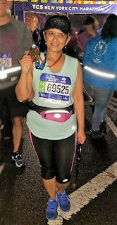
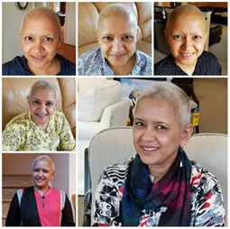
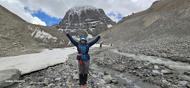
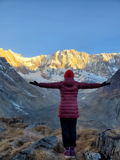

Real lives, quiet courage, and the people who change the world by changing one life at a time.
Deepak's JourneyUnemployedStrength in the Storm
WWander & Cherish · One child, a lifetime of change
Deepak's Journey
One child, a lifetime of change.
I never imagined that a chance meeting with an innocent boy in my father's school would one day lead me to stand in front of his own home, watching him succeed beyond all expectations.
But before that moment came, there was another story — a painful lesson that changed the way I chose to help forever.
Many years ago, I believed in helping children through a well-known international sponsorship program. I paid $20 a month to support a girl named Mantu Mal. Over time, the fees increased, but I continued to pay, thinking of her as part of my family.
The organization would send me her photo and letters every month. I kept her picture on my refrigerator, and my daughters even called her their "sister." For eight years, we watched her grow through photos, believing we were making a difference.
Then, one day, a letter arrived. Mantu was "too old" for the program and was getting married at just 14. I asked for her contact information so I could speak with her and be sure she was okay. The organization refused, telling me not to interfere.
I was heartbroken. To them, she may have been just another child in their program, but to me, she was real.
"Mantu was not a photo on my fridge, but a real person for me. Since the world has only a few good people left, this will discourage them too."
From that moment on, I vowed: if I ever sponsored a child again, it would be a life I could see, a hand I could hold, a story I could follow.
A few years later, while traveling to India to visit my father, I took a small detour that would change my life — and someone else's — forever. My father helps run a school (G.G. Chitnis School), and during my visit, he pointed out a small boy standing quietly in the corner. "If his fees aren't paid soon," my father said, "he will have to leave the school."
The boy's name was Deepak. He had lost his father in a tragic construction accident, and his mother, a woman from a respectable family, was left without a job, struggling to support her son and her elderly mother. In India, education is not free; school fees must be paid, and without them, even the brightest children can lose their chance to learn.
I remember the first time I saw Deepak — thin, shy, and with an innocence that made my heart ache. My father told me that he couldn't even afford milk, the most basic nourishment for a growing child. In that moment, I decided I would sponsor his education.
From that day on, I paid his school fees year after year. His mother, with quiet dignity, took work as a maid to support her family. My father, ever the educator, kept a watchful eye on Deepak's grades, and each time I visited India, Deepak would come to see me. I encouraged him to keep studying, to dream bigger. And he did.
He was a hardworking student, determined to carve out a better future. My own children, hearing about his persistence, found inspiration in his story. Eventually, Deepak secured admission to a Computer Science college degree program. I helped where I could, my father helped too, and his mother's dedication never wavered.
I still remember visiting his college and meeting the principal. He told me what a difference I had made in Deepak's life, praising his intelligence and potential. But he also added, almost as a warning, "When they become successful and stand on their own, they will forget you."
Years passed. Deepak graduated, found a job at an insurance company, and worked his way up to become a manager. One day, I stood in front of his very own home and saw him there, confident and successful. They say happiness cannot be measured, but in that moment, seeing what he had achieved, I felt joy beyond words. I want to give a special thanks to my dad for teaching me good values.
It reminded me of a simple truth: you don't have to change the whole world — just change one child's world, and you change the future.
If you ever feel powerless in the face of the world's problems, remember this: you don't have to save everyone. Start with one. Show up, believe in them, and keep showing up. You might just change their life — and in doing so, you'll change the world.
Today Deepak travels to Indian villages trying to help educate younger kids just like him, and his success gives me a sense of contentment I cannot explain.
WWander & Cherish · Stories from workforce training
Unemployed
The quiet struggles, the small victories, and the raw truth of what it really means to be unemployed today.
For years I've worked in workforce training, guiding people through the hardest chapters of their lives. Now, I want to pull back the curtain and show their world.
I created a reality TV concept called Unemployed, a series that reveals what it truly means to be without work in today's world. I copyrighted it, presented it to some producers, but no one picked it up. The response was always the same: it "lacks entertainment value."
But after years in workforce training, I know that couldn't be further from the truth. These stories are dramatic, emotional, and deeply relatable. They aren't just statistics — they're parents, graduates, dreamers, and survivors. Unemployed isn't about spectacle; it's about humanity. And in a world where millions are facing this struggle, there's nothing more timely, relevant, or necessary.
Unemployment isn't just about a lost paycheck. It can mean losing your home, custody of your children, relationships, and even your health. I've had students facing foreclosure, living out of their cars because rent was out of reach, and battling medical problems they couldn't afford to treat. The true cost runs far deeper than money — it's a fight for dignity, stability, and survival. For many, the hardest loss is hope itself, as finding a job becomes harder and harder.
Come, let me tell you a few stories…
Step into Maria's world — her experiences, her feelings — as I tell her story from her point of view.
Maria sat curled up on the edge of her bed, scrolling through job postings on her phone. The listings blurred together — "experience required," "references needed" — things she didn't have. She sighed and closed the app, tossing the phone beside her. It wasn't the first night she'd ended like this, staring at the ceiling, wondering if she'd ever catch up with everyone else.
Growing up, stability had been a stranger. Foster homes came and went, and the old memories she carried weren't ones she liked to revisit. Some days she could push them down, but on days like this, they rose up, making every rejection letter feel heavier.
Things began to shift when she enrolled in a workforce training program. At first, she thought it would be another box to check, another place where she wouldn't fit. But the classes gave her structure, and little by little, she started picking up skills she never thought she'd learn — resume writing, interview prep, even software she'd only ever heard about.
I noticed when Maria hung back or grew quiet. I encouraged her, nudged her to speak up, and stayed after class to walk her through things she didn't understand. For the first time, Maria felt like someone believed she was capable.
With my guidance, Maria applied for a job she almost talked herself out of. When she got the call saying she'd been hired, she cried — not because everything was suddenly perfect, but because it was the first time she could see a different future opening up in front of her.
Enter my world for a glimpse into a day of workforce training…
The classroom is quiet. Rows of students — some weary, some anxious — sit with notebooks open. A woman in her 50s walks in, poised and confident, but carrying the weight of a storm no one sees. She was once a bank director. Laid off. Battling cancer. Her savings wiped out by medical bills. No family to turn to.
She takes a seat, pulls out her notebook, and begins to write. Hours pass, lessons are given, but the true lesson is her presence. Suddenly, she collapses. The room freezes. Later, I learn the truth: she has only months to live. Yet here she is, showing up every day, determined to learn, to survive, to hope.
She looks at the class and says, softly but firmly:
"As long as you have life, you have hope."
And just like that, the room — the students, even I — understand what it really means to fight against unemployment, against loss, against life itself.
For me, these are not just stories; they are real lives. Behind every statistic about unemployment, there are people carrying heavy histories: young adults aging out of foster care, parents trying to provide for their children, workers who lost their jobs after years of loyalty, and those still healing from trauma that shadows every opportunity.
Hopelessness is not abstract — it shows up in empty refrigerators, in the quiet of a bedroom where someone scrolls through job postings they don't feel qualified for, in the silence after another rejection email. These moments rarely make headlines, but they are the lived reality of countless people across our communities.
That's why workforce training matters. In the United States, we have resources many countries cannot offer, yet access is uneven, and too many are left behind. When training programs are done well, they do more than teach skills — they restore confidence, open doors, and remind people that their past does not define their future. And often, it is a single teacher, mentor, or coach who makes the difference: someone who sees potential when the individual cannot yet see it in themselves.
But I believe we can do better. We call ourselves a developed nation, yet too many of our neighbors are left to navigate unemployment, poverty, and trauma without the support they need. There is a mismatch between the skills people have and the skills industries need. Bridging that gap is where change truly happens.
This isn't about numbers or policies written on paper. It's about people — real people like Maria, like me, and maybe even you, the reader.
PRajeshree's story · written by Pratibha
Strength in the Storm
A diagnosis, a mountain, and the quiet decision to keep climbing.
The world-famous TCS New York City Marathon — the most iconic race in the world. In 2017, I was one of the lucky few who won the lottery to run it.
I still remember the moment I got the confirmation email — I was over the moon. It was going to be my first marathon, and I threw myself into training with everything I had. I drank plenty of water, ate clean, and kept a disciplined sleep schedule. I was in the best shape of my life, and more motivated than ever.
Then, everything changed.
It was October 2017 when life took an unexpected turn. What began as a seemingly minor discomfort — something I dismissed as training fatigue — slowly grew into something more concerning. Deep down, I sensed something wasn't quite right.
The word "cancer" is terrifying on its own, but it always felt distant, like something that happened to other people. I was healthy, strong, in the best shape of my life. How could this be happening to me? I still ran my marathon with the lump on November 5th. On November 13th, 2017, I was formally diagnosed with Stage 2 breast cancer.

One of the first things the doctors told me was that the treatment would cause hair loss. So, instead of waiting for that to happen, I took control. I shaved my head — on my own terms. I even had a head-shaving party, and my son Kaustubh shaved his head to show his support.
"You may change how I look, but you won't take who I am." I couldn't change the diagnosis, but I could choose how I responded to it.
The journey through cancer
Chemo
The medicine that saves but also takes. My body ached. My taste changed. Fatigue settled into my bones like fog. But I kept showing up — needle after needle, round after round — because healing, even when invisible, was happening. As a true foodie, losing my sense of taste was one of the hardest side effects to cope with.
Surgery
The day I gave a part of myself away to stay alive. Scars were left — physical ones, yes, but also emotional ones. Looking in the mirror felt different. I grieved the loss. However, I realized that it is just a body part — it's not me.
Radiation
The silent beam that targeted what was left — precise, persistent. Each session was a surrender: trusting the science, trusting the process. I had moments of discomfort and extreme fatigue — no one faces something like this without feeling those things. But I made a conscious decision: I wasn't going to be defined by cancer. I was going to meet it with courage, hope, and a little humor where I could find it.
I started focusing on what I could control — my mindset, my daily habits, the love and support I surrounded myself with. One of the greatest blessings was the unwavering support of the people around me: my husband, my son, my sister, my family, and all my friends.
They say you can't stop the waves, but you can learn to surf. That became my mantra. I wasn't just trying to survive — I was learning to live fully, even in the storm.
From November 2017 to July 2018, I had 8 chemotherapies, 1 major surgery, and 25 radiations. After this regime, my doctor declared that I was cancer-free.
Lessons learned
Through this journey, I learned some of life's most profound lessons — not from books or doctors, but from the quiet moments in between: the stillness, the struggle, the surrender.
I learned to love deeply, but without clinging — to cherish people and moments without trying to hold on too tightly. It wasn't enough to forgive others — I had to learn to forgive myself too, for the things I couldn't control, for the times I wasn't strong, for simply being human. And perhaps most importantly, I'm grateful for my rebirth, and thankful for every moment.
The journey forward

It took me almost a year and a half to feel normal from within. In January 2020, I started feeling much better. I joined a gym, started hiking regularly, and met like-minded people who shared the same love for movement and the outdoors. Every other day became a rhythm of wellness — walking, yoga, and weight training. I joined a meet-up group, Desi Outdoors, and challenged myself with tougher hikes — the Catskills peaks in different seasons, Mt. Washington, Franconia Ridge. Then the Himalayas started calling. "The mountains are calling, and I must go," as John Muir said. That's exactly what happened.
2022 — Annapurna Base Camp

In the heart of the Himalayas
I set out on a 9-day trek that would test not just my body, but my spirit. We stayed in tents under the vast Himalayan sky, surrounded by silence, stars, and the crisp breath of the earth at 14,000 feet. There was something sacred about that struggle — you feel the mountain not as an obstacle, but as a teacher. It humbles you; it asks for patience, presence, and grit. I carried my own weight — quite literally — and each step was a reminder of the discipline I'd built, and of what I had endured and was capable of overcoming.
2022 — Camino Portugués
A 160-mile spiritual walk, carrying our own 18–20 lb backpacks, over 14 days from Porto, Portugal to Santiago de Compostela, Spain.
2023 — Everest Base Camp

A whole new adventure — higher, harsher, and more demanding than anything I had done before. At over 17,000 feet, the air thins, and so does everything else: your energy, your appetite, your comfort. Before we even began, things had started to unravel — my husband Rajesh tested positive for COVID, and a close friend who had trained so hard had to stay back. You feel terrible, but the journey continues, because the mountain doesn't wait for perfect conditions.
As we ascended, the altitude played tricks on the mind. You feel like a zombie — legs heavy, mind clouded, moving forward powered by something deeper than logic. Breathing becomes your only focus. You just keep walking, step after step, until you sink into the present. A wave of appreciation rises — for your body, your breath, your resilience, your life. And when we finally reached Base Camp, it wasn't just a destination — it was a quiet, sacred victory. A whisper to myself: "You did it."
And the journey continued
September 2023 — Machu Picchu, another high-altitude, multi-day hike in South America. June 2024 — the Mount Kailash Manasarovar parikrama, considered the holiest walk in Tibet: a 52-kilometer route around Mount Kailash, crossing the highest point at Dolma La Pass at 18,471 feet. September 2024 — the Grand Canyon Rim to Rim in a single day: roughly 21 to 24 miles with over 7,000 feet of elevation gain — one of the most intense challenges a hiker can undertake.
The miracle of staying positive
There are moments in life when everything feels heavier — your body, your thoughts, the silence between heartbeats. In those moments, it's easy to feel small, easy to want to turn back. But then something incredible happens — you choose hope. You choose to believe that your story isn't over.
Positivity is not pretending the pain doesn't exist. It's standing in the middle of the storm and saying, "I will not let this break me." It's the fire that burns quietly in your chest, telling you to take one more step, one more breath, one more try — even when it hurts.
Mountains aren't just made of rock. They're made of stories. Of struggle. Of rising again and again.
When you choose to stay positive, you become the kind of person who doesn't just survive — you inspire. So wherever you are right now — healing, climbing, fighting — hold on to that inner light. Nurture it. Let it grow. Because the path may be steep, but your spirit was made for this.